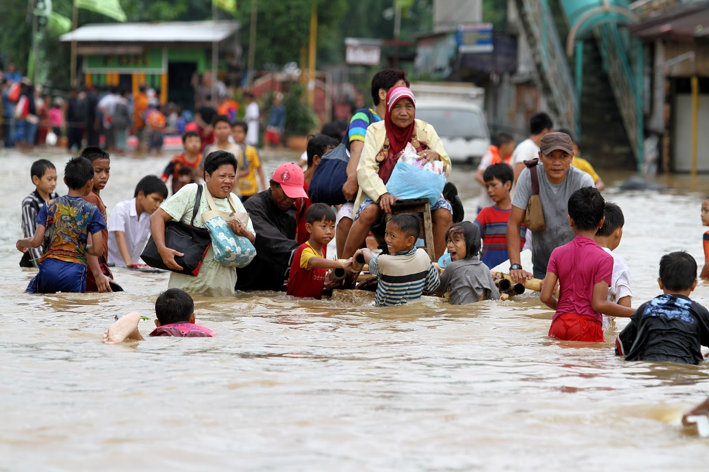

Berita Utama
Banjir Rob Rendam 3 RT dan 4 Ruas Jalan di Jakarta Utara
Badan Penanggulangan Bencana Daerah (BPBD) DKI Jakarta mencatat ada tiga RT di wilayah Jakarta Utara yang terendam banjir rob hingga Senin (18/11) pukul 14.00 WIB. Selain itu, berdasarkan data BPBD, empat ruas jalan di wilayah Jakarta Utara juga masih tergenang akibat banjir rob.
Baca SelengkapnyaBerita Lainnya

Harga Bahan Pokok Naik Jelang Akhir Tahun
Menjelang akhir tahun, harga bahan pokok di Indonesia mengalami kenaikan akibat inflasi global